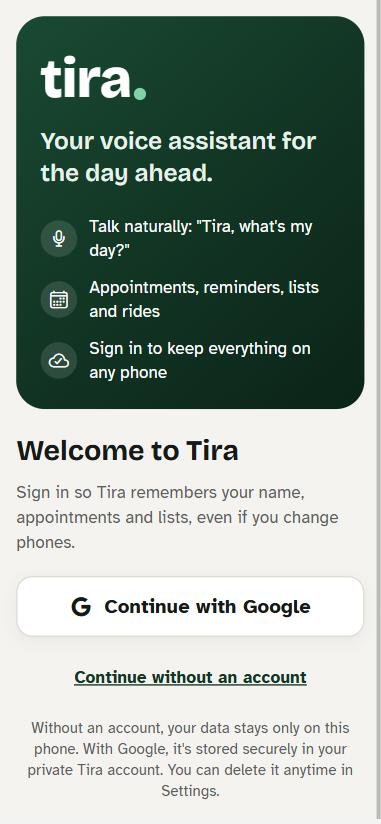
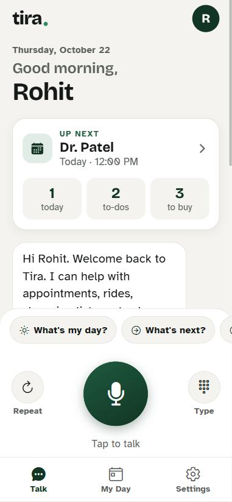
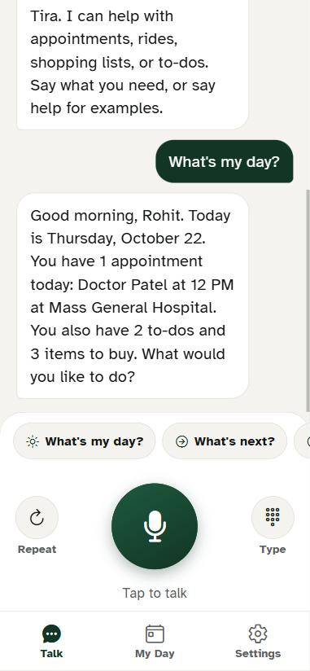
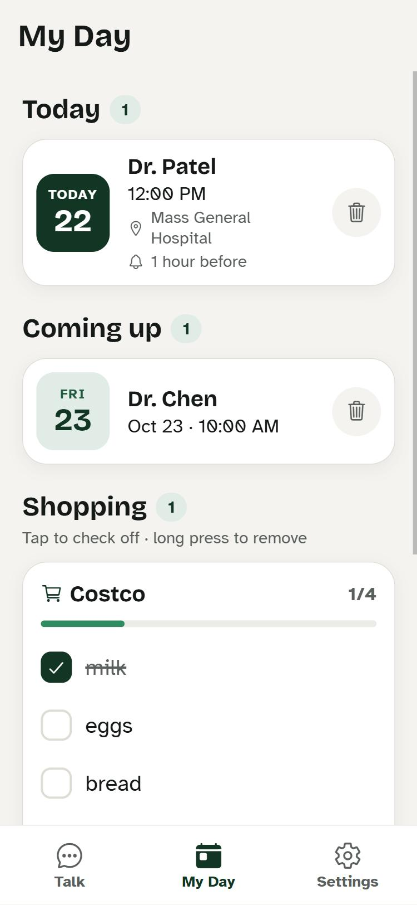
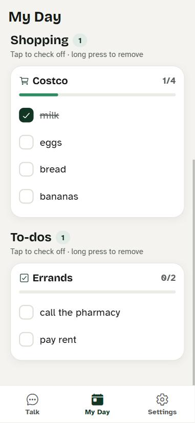
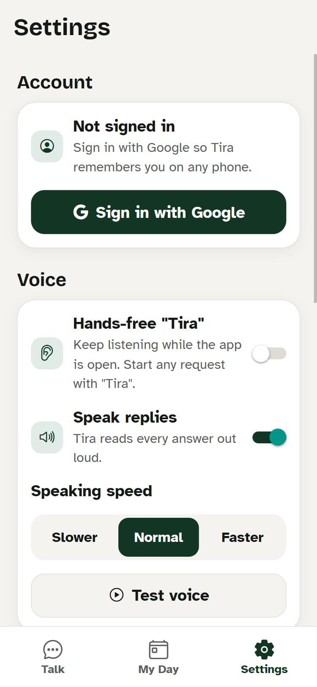

Anjali Saumithri Devi Inturi
I build software end to end: clean, accessible interfaces on the front, reliable data and well-written SQL behind them. M.S. Computer Science at Northeastern (Dec 2027), Graduate TA in two AI courses, a software engineering co-op, and two years as a data engineer at Wipro.
Strengths, with the numbers behind them
Four things I do well, each backed by work you can check.
Building complete products
I designed and built Tira alone, from UI to dialogue engine to database: ~14,700 lines, 22 automated tests, 7 voice features, now being prepared for Google Play.
Data & SQL
2+ years at Wipro designing relational schemas, tuning SQL on PostgreSQL and running AWS pipelines. Built a PySpark validation framework with 15+ checks that stopped bad data before it reached reports.
Reliable, tested code
On my co-op I worked in a 31-intent, ~11,800-line Node.js codebase with 7 feature test suites, fixing issues each round to get it ready for Alexa certification.
Explaining things clearly
Graduate TA for 2 AI courses: I grade 80+ students and hold 2 office hours a week for students without a CS background. I solve problems fast too: 500+ LeetCode problems, top 7% in contests.
Tira — a voice-first phone assistant
An Android/iOS/web app for people who would rather talk than tap, especially low-vision users. "Tira, add an appointment with Dr. Smith tomorrow at 2 PM." I designed and built it end to end, and it's being prepared for Google Play.
- 7 voice capabilities: appointments, a spoken daily briefing, what's next, shopping lists by store, to-dos, ride requests and "repeat that", plus a hands-free wake word.
- ~14,700 lines of JavaScript across the app and a dialogue engine (classify → dispatch → multi-turn flows) with chrono-node for natural-language dates, ported from the Alexa skill I worked on as a co-op so it runs entirely on the phone.
- 22 automated tests (16 multi-turn conversation scripts, 6 cloud-sync) that run under plain Node, so the engine is checked without a device.
- Accessible by design: Atkinson Hyperlegible type, strong contrast, screen-reader labels on every control, haptic feedback when Tira hears you, adjustable speaking speed.
- Database: Google sign-in and Supabase (PostgreSQL) sync with row-level security, so each customer reads only their own rows. It works offline and syncs later; guest data never leaves the phone.






Where I've worked
Most recent first.
- Built features for a voice-first Alexa skill covering appointments, rides, shopping lists and to-dos, in Node.js on AWS Lambda with DynamoDB and AWS CDK.
- Worked across a 31-intent interaction model and an ~11,800-line modular codebase, writing voice flows that state dates, times and choices out loud, so users never need a screen.
- Wrote and maintained tests in a regression suite of 7 feature suites plus dialogue, NLU-parity and edge-case runs; fixed what each testing round surfaced to prepare the skill for Alexa certification.
- Helped keep local-only turns inside a <80 ms warm Lambda budget, with production and staging stacks deployed from the same CDK code.
- Took the dialogue engine further on my own time and turned it into Tira (above).
- TA for 2 courses across 2 consecutive terms; grade 80+ students' assignments against structured rubrics, re-running each spreadsheet solution to check the scores they report.
- Graded optimization assignments such as the TA-assignment problem, a constraint-and-scoring model over 50+ TAs and course sections.
- Hold 2 office hours a week and answer questions by email and course channels, explaining search, heuristics and optimization to students without a CS background.
- Write short, specific feedback: what worked, where points were lost and why, so students know exactly what to fix.
- Designed, built and deployed distributed data pipelines on AWS (S3, Glue, EMR) for structured and semi-structured data.
- Engineered a configurable PySpark validation framework with 15+ rule-based checks (nulls, formats, referential integrity) that caught bad data before it reached reports.
- Designed relational schemas and optimized SQL on PostgreSQL for analytics and ML consumers; root-caused production data issues.
- Acted as a point of contact for client and internal stakeholders, turning requirements into documented designs.
- Built and maintained ETL/ELT pipelines in Python, PySpark and SQL for transforming and validating relational data at production scale.
- Learned pipeline design from senior engineers, then resolved recurring issues independently through to closure.
On GitHub
A selection, with links to the code.
LangGraph agentic workflow
An agent system with self-learning memory. I designed the REST API, the service architecture and PostgreSQL-backed session state.
langgraph-agentic-workflow →Multimodal RAG pipeline
Document ingestion and hybrid retrieval (FAISS + BM25) served through FastAPI, with automated tests that check accuracy before deployment.
multimodalRAGapplication →AI music recommendation
A recommendation system taken from proposal to a working codebase over five iterations.
ai_music_rec →Front-end practice
Small HTML/CSS/JavaScript builds: an advice generator that calls a public API, a QR component, plus React and Angular exercises.
advice_generator_app → · react →Toolkit
- Front end
- JavaScript, TypeScript, HTML, CSS, SVG, React / React Native, accessible UI
- Visualization
- SVG by hand, d3-style data binding, Matplotlib, Seaborn, Power BI
- Databases
- SQL, PostgreSQL, schema design, query tuning, DynamoDB, Supabase
- Back end & data
- Python, Node.js, FastAPI, Flask, REST APIs, PySpark, ETL/ELT
- Cloud
- AWS (Lambda, S3, Glue, EMR, DynamoDB, CDK, Bedrock) · AWS Certified AI Practitioner & Cloud Practitioner
- Practice
- Git and pull requests, code review, automated testing, documentation, teaching
Let's talk
I'm open to software engineering, full-stack, data engineering and data visualization roles, in Boston or remote. My resume and full CV are below.